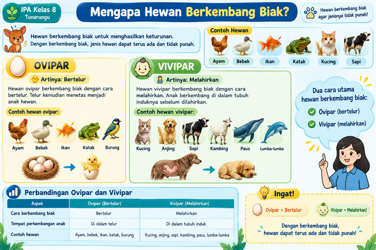

📚 Materi Pembelajaran
Cara Perkembangbiakan Hewan
🐾 Mengapa Hewan Berkembang Biak?
Hewan berkembang biak untuk menghasilkan keturunan. Dengan berkembang biak, jenis hewan dapat terus ada dan tidak punah.

🐔
Ayam
🦆
Bebek
🐟
Ikan
🐸
Katak
🐱
Kucing
🐄
Sapi
🔎 Dua Cara Utama Hewan Berkembang Biak
OVIPAR
🐣 Artinya: Bertelur
Hewan ovipar berkembang biak dengan cara
bertelur.
Telur kemudian menetas menjadi anak hewan.
Contoh hewan ovipar:
🐔 Ayam
🦆 Bebek
🐟 Ikan
🐸 Katak
🐦 Burung
VIVIPAR
🤰 Artinya: Melahirkan
Hewan vivipar berkembang biak dengan cara
melahirkan.
Anak berkembang di dalam tubuh induknya
sebelum dilahirkan.
Contoh hewan vivipar:
🐱 Kucing
🐶 Anjing
🐄 Sapi
🐐 Kambing
🐋 Paus
🐬 Lumba-lumba
📊 Perbandingan Ovipar dan Vivipar
| Aspek | 🥚 Ovipar | 👶 Vivipar |
|---|---|---|
| Cara berkembang biak | Bertelur | Melahirkan |
| Perkembangan anak | Di dalam telur | Di dalam tubuh induk |
| Contoh hewan | Ayam, bebek, ikan, katak, burung | Kucing, anjing, sapi, kambing, paus, lumba-lumba |
💡 INGAT MUDAH!
🥚 OVIPAR = BERTELUR
👶 VIVIPAR = MELAHIRKAN
Hewan berkembang biak agar jenisnya dapat terus ada dan tidak punah.
📝 LKPD
Latihan Cara Perkembangbiakan Hewan
👨🎓 Data Peserta Didik
🔵 A. Pilihan Ganda
Pilih jawaban yang paling tepat!
1
Hewan berkembang biak untuk menghasilkan ....
2
Hewan yang berkembang biak dengan bertelur disebut ....
3
Contoh hewan ovipar adalah ....
4
Bebek berkembang biak dengan cara ....
5
Berikut yang termasuk hewan ovipar adalah ....
6
Hewan yang berkembang biak dengan melahirkan disebut ....
7
Hewan berikut yang termasuk vivipar adalah ....
8
Sapi berkembang biak dengan cara ....
9
Hewan yang termasuk vivipar adalah ....
10
Paus dan lumba-lumba berkembang biak dengan cara ....
🟢 B. Jawaban Singkat
Jawablah dengan singkat dan jelas!
1
Apa yang dimaksud dengan hewan ovipar?
2
Sebutkan 3 contoh hewan yang berkembang biak dengan bertelur!
3
Sebutkan 3 contoh hewan yang berkembang biak dengan melahirkan!
🎉 Hasil LKPD
0
Nilai Pilihan Ganda
Jawaban singkat akan diperiksa oleh guru.